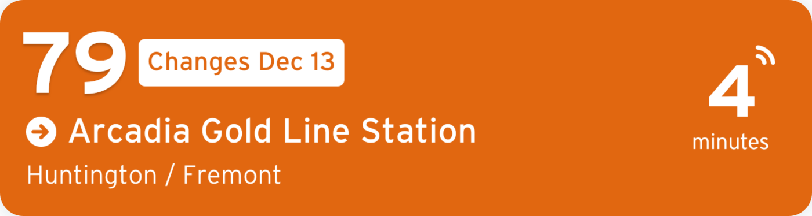
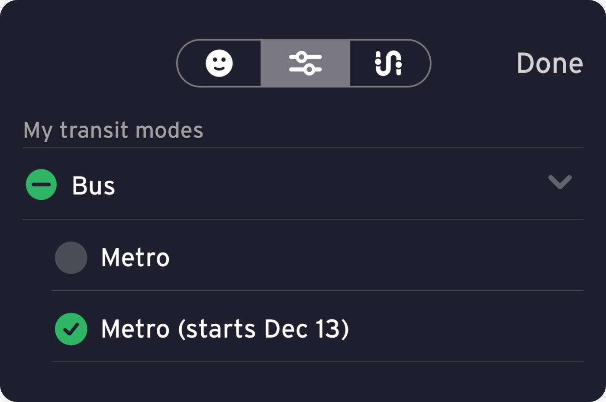

Schedule &
Route
See all bus line changes in the Dec 13, 2020 update (PDF).
Tap here to plan your trip with Transit, the official Metro app.
Metro’s official app, Transit, has marked routes in the app that are changing, ending or receiving additional service.

The app also has a preview mode to give you a peek at the service changes. Here’s how to turn it on:
- Tap “settings” (gear icon, top left corner).
- Then tap the middle slider icon at the top of the screen.
- Under “Bus,” turn off “Metro” and turn on “Metro (starts Dec 13).” Then tap “Done.” This will show you what the bus network will look like starting December 13.

Now, you can see scheduled arrival times and plan your new commute by looking at route maps, finding the nearest stop, and using the trip planner.
To go back to the current bus system, just follow the instructions again, but turn off “Metro (starts Dec 13)” and turn “Metro” back on.

Tap and
pay with the TAP App (for iOS).
Questions? Visit taptogo.net.